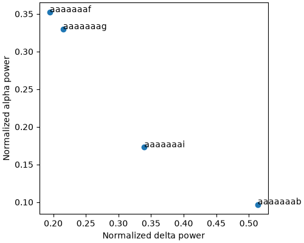
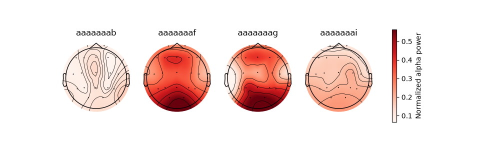

Note
Go to the end to download the full example code.
5.2. Compute the spectral markers of TUEG recordings.¶
This example runs a junifer pipeline on clinical recordings of the TUH EEG
Corpus (TUEG): the spectral markers of the ICM resting state (the power in
each band, the spectral entropy and the spectral edges), with
EEGAutoReject instead of the adaptive rejection. The pipeline is the
same as the one of a YAML file (junifer run), given as Python objects.
Authors: Federico Raimondo
License: AGPL
import tempfile
from pathlib import Path
import matplotlib.pyplot as plt
import mne
from junifer.api import collect, run
from junifer.storage import HDF5FeatureStorage
from junifer.utils import configure_logging
import junifer_eeg # noqa: F401 (registers the components)
from junifer_eeg.datasets import fetch_tueg
Set the logging level to info to see extra information
configure_logging(level="INFO")
2026-11-01 21:59:28 [info ] ===== Lib Versions ===== [junifer] pkg=utils
2026-11-01 21:59:28 [info ] numpy: 2.4.6 [junifer] pkg=utils
2026-11-01 21:59:28 [info ] scipy: 1.17.1 [junifer] pkg=utils
2026-11-01 21:59:28 [info ] datalad: 1.2.3 [junifer] pkg=utils
2026-11-01 21:59:28 [info ] pandas: 3.0.6 [junifer] pkg=utils
2026-11-01 21:59:28 [info ] nibabel: 5.4.2 [junifer] pkg=utils
2026-11-01 21:59:28 [info ] nilearn: 0.14.1 [junifer] pkg=utils
2026-11-01 21:59:28 [info ] ruamel.yaml: 0.19.1 [junifer] pkg=utils
2026-11-01 21:59:28 [info ] h5py: 3.16.0 [junifer] pkg=utils
2026-11-01 21:59:28 [info ] tqdm: 4.67.1 [junifer] pkg=utils
2026-11-01 21:59:28 [info ] templateflow: 25.1.2 [junifer] pkg=utils
2026-11-01 21:59:28 [info ] junifer_data: 1.6.1 [junifer] pkg=utils
2026-11-01 21:59:28 [info ] junifer: 0.0.9.dev6 [junifer] pkg=utils
2026-11-01 21:59:28 [info ] ======================== [junifer] pkg=utils
Download the first recording of some subjects
subjects = ["aaaaaaab", "aaaaaaaf", "aaaaaaag", "aaaaaaai"]
datadir = fetch_tueg(subjects)
2026-11-01 21:59:29 [info ] Downloading https://isip.piconepress.com/projects/nedc/data/tuh_eeg/tuh_eeg/v2.0.2/edf/000/aaaaaaab/s001_2002/02_tcp_le/aaaaaaab_s001_t000.edf [junifer] pkg=utils
2026-11-01 21:59:31 [info ] Downloading https://isip.piconepress.com/projects/nedc/data/tuh_eeg/tuh_eeg/v2.0.2/edf/000/aaaaaaaf/s001_2002/02_tcp_le/aaaaaaaf_s001_t000.edf [junifer] pkg=utils
2026-11-01 21:59:32 [info ] Downloading https://isip.piconepress.com/projects/nedc/data/tuh_eeg/tuh_eeg/v2.0.2/edf/000/aaaaaaag/s001_2002/02_tcp_le/aaaaaaag_s001_t001.edf [junifer] pkg=utils
2026-11-01 21:59:33 [info ] TUEG subject aaaaaaai already downloaded [junifer] pkg=utils
Define the datagrabber and the preprocessing: the channels are renamed to
the 10-20 names (EEG FP1-REF to Fp1), and the 19 channels of the
10-20 system are kept. See
Preprocess a TUEG recording with autoreject.
channels_1020 = [
"Fp1", "Fp2", "F7", "F3", "Fz", "F4", "F8", "T3", "C3", "Cz", "C4", "T4",
"T5", "P3", "Pz", "P4", "T6", "O1", "O2",
] # fmt: skip
datagrabber = {
"kind": "PatternDataGrabber",
"datadir": str(datadir),
"types": ["EEG"],
"patterns": {
"EEG": {
"pattern": "000/{subject}/*/*/{subject}_*.edf",
"montage": "colin27_1020",
}
},
"replacements": ["subject"],
}
datareader = {"kind": "EEGDataReader"}
preprocessors = [
{
"kind": "EEGRenameChannels",
"pattern": r"^EEG (\w+)-(REF|LE)$",
"montage_case": True,
},
{"kind": "EEGPickChannels", "picks": channels_1020},
{"kind": "EEGSetMontage"},
{
"kind": "EEGFilter",
"l_freq": 0.5,
"h_freq": None,
"method": "iir",
"iir_params": {"ftype": "butter", "order": 6},
},
{
"kind": "EEGFilter",
"l_freq": None,
"h_freq": 45.0,
"method": "iir",
"iir_params": {"ftype": "butter", "order": 8},
},
# US power line
{"kind": "EEGNotchFilter", "freqs": [60.0, 120.0], "method": "fft"},
{"kind": "EEGResample", "sfreq": 250.0},
# Pseudo-epochs of 800 ms (-200 to 600 ms), separated by 550 to 850 ms
{
"kind": "EEGFixedLengthEpochs",
"duration": 0.8,
"tmin": -0.2,
"onset": 0.0,
"jitter": [0.55, 0.85],
"baseline": None,
"seed": 42,
},
{"kind": "EEGAutoReject", "cv": 10, "seed": 42, "min_epochs": 0.3},
{"kind": "EEGAverageReference"},
]
Define the markers: the PSD of each epoch and channel is reduced to scalars (the trimmed mean across epochs, then the mean across channels) and to topographies (the trimmed mean across epochs)
psd_params = {
"estimator": {
"method": "welch",
"tmin": None,
"tmax": 0.6,
"fmin": 1.0,
"fmax": 45.0,
"method_params": {"n_fft": 4096, "n_overlap": 100, "nperseg": 128},
},
"bands": {
"delta": [1.0, 4.0],
"theta": [4.0, 8.0],
"alpha": [8.0, 12.0],
"beta": [12.0, 30.0],
"gamma": [30.0, 45.0],
},
"dB": True,
"normalized": True,
"spectral_entropy": True,
"spectral_edges": {"msf": 0.5, "sef90": 0.9, "sef95": 0.95},
}
trim_mean80 = {
"axis": "epochs",
"method": "trim_mean",
"method_params": {"proportiontocut": 0.1},
}
channels_mean = {"axis": "channels", "method": "mean"}
markers = [
{
"name": "PSD",
"kind": "EEGPowerSpectralDensityScalar",
**psd_params,
"aggregations": {"trim_mean80": [trim_mean80, channels_mean]},
},
{
"name": "PSD_topo",
"kind": "EEGPowerSpectralDensityTopography",
**psd_params,
"aggregations": {"trim_mean80": [trim_mean80]},
},
]
Run the pipeline on each subject and collect the features in a single file
tmpdir = Path(tempfile.mkdtemp())
storage = {"kind": "HDF5FeatureStorage", "uri": str(tmpdir / "tueg.hdf5")}
run(
workdir=tmpdir,
datagrabber=datagrabber,
datareader=datareader,
preprocessors=preprocessors,
markers=markers,
storage=storage,
elements=subjects,
)
collect(storage=storage, workdir=tmpdir)
2026-11-01 21:59:33 [info ] Parameters: {'types': ['EEG'], 'datadir': '/home/runner/junifer_eeg_data/tueg/v2.0.2/edf', 'patterns': {'EEG': {'pattern': '000/{subject}/*/*/{subject}_*.edf', 'montage': 'colin27_1020'}}, 'replacements': ['subject'], 'confounds_format': None, 'partial_pattern_ok': False} [junifer] component=PatternDataGrabber pkg=datagrabber step=datagrabber
2026-11-01 21:59:33 [info ] Parameters: {'on': ['EEG'], 'name': 'PSD', 'aggregations': {'trim_mean80': [{'axis': 'epochs', 'method': 'trim_mean', 'method_params': {'proportiontocut': 0.1}, 'picks': None}, {'axis': 'channels', 'method': 'mean', 'method_params': None, 'picks': None}]}, 'estimator': {'method': 'welch', 'tmin': None, 'tmax': 0.6, 'fmin': 1.0, 'fmax': 45.0, 'method_params': {'n_fft': 4096, 'n_overlap': 100, 'nperseg': 128}}, 'bands': {'delta': [1.0, 4.0], 'theta': [4.0, 8.0], 'alpha': [8.0, 12.0], 'beta': [12.0, 30.0], 'gamma': [30.0, 45.0]}, 'dB': True, 'normalized': True, 'spectral_entropy': True, 'spectral_edges': {'msf': 0.5, 'sef90': 0.9, 'sef95': 0.95}} [junifer] component=PSD pkg=markers step=marker
2026-11-01 21:59:33 [info ] Parameters: {'on': ['EEG'], 'name': 'PSD_topo', 'aggregations': {'trim_mean80': [{'axis': 'epochs', 'method': 'trim_mean', 'method_params': {'proportiontocut': 0.1}, 'picks': None}]}, 'estimator': {'method': 'welch', 'tmin': None, 'tmax': 0.6, 'fmin': 1.0, 'fmax': 45.0, 'method_params': {'n_fft': 4096, 'n_overlap': 100, 'nperseg': 128}}, 'bands': {'delta': [1.0, 4.0], 'theta': [4.0, 8.0], 'alpha': [8.0, 12.0], 'beta': [12.0, 30.0], 'gamma': [30.0, 45.0]}, 'dB': True, 'normalized': True, 'spectral_entropy': True, 'spectral_edges': {'msf': 0.5, 'sef90': 0.9, 'sef95': 0.95}} [junifer] component=PSD_topo pkg=markers step=marker
2026-11-01 21:59:33 [info ] Parameters: {'uri': '/tmp/tmpo2v_bxbw/tueg.hdf5', 'single_output': False, 'overwrite': 'update', 'compression': 7, 'force_float32': True, 'chunk_size': 100} [junifer] component=HDF5FeatureStorage pkg=storage step=storage
2026-11-01 21:59:33 [info ] Parameters: {'on': ['EEG'], 'required_data_types': ['EEG'], 'pattern': '^EEG (\\w+)-(REF|LE)$', 'replacement': '\\1', 'mapping': None, 'montage_case': True} [junifer] component=EEGRenameChannels pkg=preprocess step=preprocessing
2026-11-01 21:59:33 [info ] Parameters: {'on': ['EEG'], 'required_data_types': ['EEG'], 'picks': ['Fp1', 'Fp2', 'F7', 'F3', 'Fz', 'F4', 'F8', 'T3', 'C3', 'Cz', 'C4', 'T4', 'T5', 'P3', 'Pz', 'P4', 'T6', 'O1', 'O2'], 'exclude': None} [junifer] component=EEGPickChannels pkg=preprocess step=preprocessing
2026-11-01 21:59:33 [info ] Parameters: {'on': ['EEG'], 'required_data_types': ['EEG'], 'on_missing': 'raise'} [junifer] component=EEGSetMontage pkg=preprocess step=preprocessing
2026-11-01 21:59:33 [info ] Parameters: {'on': ['EEG'], 'required_data_types': ['EEG'], 'l_freq': 0.5, 'h_freq': None, 'method': 'iir', 'iir_params': {'ftype': 'butter', 'order': 6}, 'phase': 'zero'} [junifer] component=EEGFilter pkg=preprocess step=preprocessing
2026-11-01 21:59:33 [info ] Parameters: {'on': ['EEG'], 'required_data_types': ['EEG'], 'l_freq': None, 'h_freq': 45.0, 'method': 'iir', 'iir_params': {'ftype': 'butter', 'order': 8}, 'phase': 'zero'} [junifer] component=EEGFilter pkg=preprocess step=preprocessing
2026-11-01 21:59:33 [info ] Parameters: {'on': ['EEG'], 'required_data_types': ['EEG'], 'freqs': [60.0, 120.0], 'method': 'fft'} [junifer] component=EEGNotchFilter pkg=preprocess step=preprocessing
2026-11-01 21:59:33 [info ] Parameters: {'on': ['EEG'], 'required_data_types': ['EEG'], 'sfreq': 250.0} [junifer] component=EEGResample pkg=preprocess step=preprocessing
2026-11-01 21:59:33 [info ] Parameters: {'on': ['EEG'], 'required_data_types': ['EEG'], 'duration': 0.8, 'tmin': -0.2, 'onset': 0.0, 'jitter': [0.55, 0.85], 'baseline': None, 'seed': 42} [junifer] component=EEGFixedLengthEpochs pkg=preprocess step=preprocessing
2026-11-01 21:59:33 [info ] Parameters: {'on': ['EEG'], 'required_data_types': ['EEG'], 'n_interpolate': None, 'consensus': None, 'cv': 10, 'thresh_method': 'bayesian_optimization', 'seed': 42, 'n_jobs': 1, 'min_epochs': 0.3} [junifer] component=EEGAutoReject pkg=preprocess step=preprocessing
2026-11-01 21:59:33 [info ] Parameters: {'on': ['EEG'], 'required_data_types': ['EEG']} [junifer] component=EEGAverageReference pkg=preprocess step=preprocessing
2026-11-01 21:59:33 [info ] Validating Marker Collection [junifer] pkg=pipeline
2026-11-01 21:59:33 [info ] DataGrabber output type: ['EEG'] [junifer] pkg=pipeline
2026-11-01 21:59:33 [info ] Validating Data Reader: [junifer] pkg=pipeline
2026-11-01 21:59:33 [info ] Data Reader output type: ['EEG'] [junifer] pkg=pipeline
2026-11-01 21:59:33 [info ] Validating Preprocessor: EEGRenameChannels [junifer] pkg=pipeline
2026-11-01 21:59:33 [info ] Preprocessor input type: ['EEG'] [junifer] pkg=pipeline
2026-11-01 21:59:33 [info ] Preprocessor output type: ['EEG'] [junifer] pkg=pipeline
2026-11-01 21:59:33 [info ] Validating Preprocessor: EEGPickChannels [junifer] pkg=pipeline
2026-11-01 21:59:33 [info ] Preprocessor input type: ['EEG'] [junifer] pkg=pipeline
2026-11-01 21:59:33 [info ] Preprocessor output type: ['EEG'] [junifer] pkg=pipeline
2026-11-01 21:59:33 [info ] Validating Preprocessor: EEGSetMontage [junifer] pkg=pipeline
2026-11-01 21:59:33 [info ] Preprocessor input type: ['EEG'] [junifer] pkg=pipeline
2026-11-01 21:59:33 [info ] Preprocessor output type: ['EEG'] [junifer] pkg=pipeline
2026-11-01 21:59:33 [info ] Validating Preprocessor: EEGFilter [junifer] pkg=pipeline
2026-11-01 21:59:33 [info ] Preprocessor input type: ['EEG'] [junifer] pkg=pipeline
2026-11-01 21:59:33 [info ] Preprocessor output type: ['EEG'] [junifer] pkg=pipeline
2026-11-01 21:59:33 [info ] Validating Preprocessor: EEGFilter [junifer] pkg=pipeline
2026-11-01 21:59:33 [info ] Preprocessor input type: ['EEG'] [junifer] pkg=pipeline
2026-11-01 21:59:33 [info ] Preprocessor output type: ['EEG'] [junifer] pkg=pipeline
2026-11-01 21:59:33 [info ] Validating Preprocessor: EEGNotchFilter [junifer] pkg=pipeline
2026-11-01 21:59:33 [info ] Preprocessor input type: ['EEG'] [junifer] pkg=pipeline
2026-11-01 21:59:33 [info ] Preprocessor output type: ['EEG'] [junifer] pkg=pipeline
2026-11-01 21:59:33 [info ] Validating Preprocessor: EEGResample [junifer] pkg=pipeline
2026-11-01 21:59:33 [info ] Preprocessor input type: ['EEG'] [junifer] pkg=pipeline
2026-11-01 21:59:33 [info ] Preprocessor output type: ['EEG'] [junifer] pkg=pipeline
2026-11-01 21:59:33 [info ] Validating Preprocessor: EEGFixedLengthEpochs [junifer] pkg=pipeline
2026-11-01 21:59:33 [info ] Preprocessor input type: ['EEG'] [junifer] pkg=pipeline
2026-11-01 21:59:33 [info ] Preprocessor output type: ['EEG'] [junifer] pkg=pipeline
2026-11-01 21:59:33 [info ] Validating Preprocessor: EEGAutoReject [junifer] pkg=pipeline
2026-11-01 21:59:33 [info ] Preprocessor input type: ['EEG'] [junifer] pkg=pipeline
2026-11-01 21:59:33 [info ] Preprocessor output type: ['EEG'] [junifer] pkg=pipeline
2026-11-01 21:59:33 [info ] Validating Preprocessor: EEGAverageReference [junifer] pkg=pipeline
2026-11-01 21:59:33 [info ] Preprocessor input type: ['EEG'] [junifer] pkg=pipeline
2026-11-01 21:59:33 [info ] Preprocessor output type: ['EEG'] [junifer] pkg=pipeline
2026-11-01 21:59:33 [info ] Validating Marker: PSD [junifer] pkg=pipeline
2026-11-01 21:59:33 [info ] Marker output type: [<StorageType.Vector: 'vector'>] [junifer] pkg=pipeline
2026-11-01 21:59:33 [info ] Validating storage for PSD [junifer] pkg=pipeline
2026-11-01 21:59:33 [info ] Validating Marker: PSD_topo [junifer] pkg=pipeline
2026-11-01 21:59:33 [info ] Marker output type: [<StorageType.ScalarTable: 'scalar_table'>] [junifer] pkg=pipeline
2026-11-01 21:59:33 [info ] Validating storage for PSD_topo [junifer] pkg=pipeline
2026-11-01 21:59:33 [info ] Getting element ('aaaaaaab',) [junifer] pkg=datagrabber step=datagrabber
2026-11-01 21:59:33 [info ] Resolving path from pattern for DataType.EEG [junifer] pkg=datagrabber step=datagrabber
2026-11-01 21:59:33 [info ] Fitting pipeline [junifer] pkg=pipeline
2026-11-01 21:59:33 [info ] Reading EEG from /home/runner/junifer_eeg_data/tueg/v2.0.2/edf/000/aaaaaaab/s001_2002/02_tcp_le/aaaaaaab_s001_t000.edf [junifer] pkg=datareader step=datareader
2026-11-01 21:59:33 [info ] EEG is of format edf [junifer] pkg=datareader step=datareader
2026-11-01 21:59:33 [info ] Preprocessing data with EEGRenameChannels [junifer] pkg=pipeline
2026-11-01 21:59:33 [info ] Preprocessing DataType.EEG [junifer] pkg=preprocess step=preprocessing
2026-11-01 21:59:33 [info ] Preprocessing data with EEGPickChannels [junifer] pkg=pipeline
2026-11-01 21:59:33 [info ] Preprocessing DataType.EEG [junifer] pkg=preprocess step=preprocessing
2026-11-01 21:59:33 [info ] Preprocessing data with EEGSetMontage [junifer] pkg=pipeline
2026-11-01 21:59:33 [info ] Preprocessing DataType.EEG [junifer] pkg=preprocess step=preprocessing
2026-11-01 21:59:33 [info ] Preprocessing data with EEGFilter [junifer] pkg=pipeline
2026-11-01 21:59:33 [info ] Preprocessing DataType.EEG [junifer] pkg=preprocess step=preprocessing
2026-11-01 21:59:33 [info ] Preprocessing data with EEGFilter [junifer] pkg=pipeline
2026-11-01 21:59:33 [info ] Preprocessing DataType.EEG [junifer] pkg=preprocess step=preprocessing
2026-11-01 21:59:33 [info ] Preprocessing data with EEGNotchFilter [junifer] pkg=pipeline
2026-11-01 21:59:33 [info ] Preprocessing DataType.EEG [junifer] pkg=preprocess step=preprocessing
2026-11-01 21:59:33 [info ] Preprocessing data with EEGResample [junifer] pkg=pipeline
2026-11-01 21:59:33 [info ] Preprocessing DataType.EEG [junifer] pkg=preprocess step=preprocessing
2026-11-01 21:59:33 [info ] Preprocessing data with EEGFixedLengthEpochs [junifer] pkg=pipeline
2026-11-01 21:59:33 [info ] Preprocessing DataType.EEG [junifer] pkg=preprocess step=preprocessing
2026-11-01 21:59:33 [info ] Preprocessing data with EEGAutoReject [junifer] pkg=pipeline
2026-11-01 21:59:33 [info ] Preprocessing DataType.EEG [junifer] pkg=preprocess step=preprocessing
Dropped 18 epochs: 31, 60, 64, 65, 77, 97, 105, 107, 114, 115, 116, 118, 119, 125, 136, 212, 227, 232
2026-11-01 21:59:35 [info ] autoreject: 18 bad epochs, 667 channels interpolated in the epochs (n_interpolate 4, consensus 0.5) [junifer] pkg=preprocess step=preprocessing
2026-11-01 21:59:35 [info ] Preprocessing data with EEGAverageReference [junifer] pkg=pipeline
2026-11-01 21:59:35 [info ] Preprocessing DataType.EEG [junifer] pkg=preprocess step=preprocessing
2026-11-01 21:59:35 [info ] Fitting marker PSD [junifer] pkg=pipeline
2026-11-01 21:59:35 [info ] Computing DataType.EEG [junifer] pkg=markers step=marker
2026-11-01 21:59:36 [info ] Storing in <HDF5FeatureStorage @ /tmp/tmpo2v_bxbw/tueg.hdf5 (multiple output)> [junifer] pkg=markers step=marker
2026-11-01 21:59:36 [info ] Writing HDF5 metadata for 4785431744c732624c88315f78d86cdf to: /tmp/tmpo2v_bxbw/element_aaaaaaab_tueg.hdf5 [junifer] pkg=storage step=storage
2026-11-01 21:59:36 [info ] Wrote HDF5 metadata for 4785431744c732624c88315f78d86cdf to: /tmp/tmpo2v_bxbw/element_aaaaaaab_tueg.hdf5 [junifer] pkg=storage step=storage
2026-11-01 21:59:36 [info ] Writing HDF5 data for 4785431744c732624c88315f78d86cdf to: /tmp/tmpo2v_bxbw/element_aaaaaaab_tueg.hdf5 [junifer] pkg=storage step=storage
2026-11-01 21:59:36 [info ] Wrote HDF5 data for 4785431744c732624c88315f78d86cdf to: /tmp/tmpo2v_bxbw/element_aaaaaaab_tueg.hdf5 [junifer] pkg=storage step=storage
2026-11-01 21:59:36 [info ] Fitting marker PSD_topo [junifer] pkg=pipeline
2026-11-01 21:59:36 [info ] Computing DataType.EEG [junifer] pkg=markers step=marker
2026-11-01 21:59:36 [info ] Storing in <HDF5FeatureStorage @ /tmp/tmpo2v_bxbw/tueg.hdf5 (multiple output)> [junifer] pkg=markers step=marker
2026-11-01 21:59:36 [info ] Writing HDF5 metadata for ee9b4fb07bc3399298675325a8aa31df to: /tmp/tmpo2v_bxbw/element_aaaaaaab_tueg.hdf5 [junifer] pkg=storage step=storage
2026-11-01 21:59:36 [info ] Wrote HDF5 metadata for ee9b4fb07bc3399298675325a8aa31df to: /tmp/tmpo2v_bxbw/element_aaaaaaab_tueg.hdf5 [junifer] pkg=storage step=storage
2026-11-01 21:59:36 [info ] Writing HDF5 data for ee9b4fb07bc3399298675325a8aa31df to: /tmp/tmpo2v_bxbw/element_aaaaaaab_tueg.hdf5 [junifer] pkg=storage step=storage
2026-11-01 21:59:36 [info ] Wrote HDF5 data for ee9b4fb07bc3399298675325a8aa31df to: /tmp/tmpo2v_bxbw/element_aaaaaaab_tueg.hdf5 [junifer] pkg=storage step=storage
2026-11-01 21:59:36 [info ] Marker collection fitting done [junifer] pkg=pipeline
2026-11-01 21:59:36 [info ] Getting element ('aaaaaaaf',) [junifer] pkg=datagrabber step=datagrabber
2026-11-01 21:59:36 [info ] Resolving path from pattern for DataType.EEG [junifer] pkg=datagrabber step=datagrabber
2026-11-01 21:59:36 [info ] Fitting pipeline [junifer] pkg=pipeline
2026-11-01 21:59:36 [info ] Reading EEG from /home/runner/junifer_eeg_data/tueg/v2.0.2/edf/000/aaaaaaaf/s001_2002/02_tcp_le/aaaaaaaf_s001_t000.edf [junifer] pkg=datareader step=datareader
2026-11-01 21:59:36 [info ] EEG is of format edf [junifer] pkg=datareader step=datareader
2026-11-01 21:59:36 [info ] Preprocessing data with EEGRenameChannels [junifer] pkg=pipeline
2026-11-01 21:59:36 [info ] Preprocessing DataType.EEG [junifer] pkg=preprocess step=preprocessing
2026-11-01 21:59:36 [info ] Preprocessing data with EEGPickChannels [junifer] pkg=pipeline
2026-11-01 21:59:36 [info ] Preprocessing DataType.EEG [junifer] pkg=preprocess step=preprocessing
2026-11-01 21:59:36 [info ] Preprocessing data with EEGSetMontage [junifer] pkg=pipeline
2026-11-01 21:59:36 [info ] Preprocessing DataType.EEG [junifer] pkg=preprocess step=preprocessing
2026-11-01 21:59:36 [info ] Preprocessing data with EEGFilter [junifer] pkg=pipeline
2026-11-01 21:59:36 [info ] Preprocessing DataType.EEG [junifer] pkg=preprocess step=preprocessing
2026-11-01 21:59:36 [info ] Preprocessing data with EEGFilter [junifer] pkg=pipeline
2026-11-01 21:59:36 [info ] Preprocessing DataType.EEG [junifer] pkg=preprocess step=preprocessing
2026-11-01 21:59:36 [info ] Preprocessing data with EEGNotchFilter [junifer] pkg=pipeline
2026-11-01 21:59:36 [info ] Preprocessing DataType.EEG [junifer] pkg=preprocess step=preprocessing
2026-11-01 21:59:36 [info ] Preprocessing data with EEGResample [junifer] pkg=pipeline
2026-11-01 21:59:36 [info ] Preprocessing DataType.EEG [junifer] pkg=preprocess step=preprocessing
2026-11-01 21:59:36 [info ] Preprocessing data with EEGFixedLengthEpochs [junifer] pkg=pipeline
2026-11-01 21:59:36 [info ] Preprocessing DataType.EEG [junifer] pkg=preprocess step=preprocessing
2026-11-01 21:59:36 [info ] Preprocessing data with EEGAutoReject [junifer] pkg=pipeline
2026-11-01 21:59:36 [info ] Preprocessing DataType.EEG [junifer] pkg=preprocess step=preprocessing
Dropped 2 epochs: 0, 9
2026-11-01 21:59:37 [info ] autoreject: 2 bad epochs, 76 channels interpolated in the epochs (n_interpolate 1, consensus 0.7000000000000001) [junifer] pkg=preprocess step=preprocessing
2026-11-01 21:59:37 [info ] Preprocessing data with EEGAverageReference [junifer] pkg=pipeline
2026-11-01 21:59:37 [info ] Preprocessing DataType.EEG [junifer] pkg=preprocess step=preprocessing
2026-11-01 21:59:37 [info ] Fitting marker PSD [junifer] pkg=pipeline
2026-11-01 21:59:37 [info ] Computing DataType.EEG [junifer] pkg=markers step=marker
2026-11-01 21:59:38 [info ] Storing in <HDF5FeatureStorage @ /tmp/tmpo2v_bxbw/tueg.hdf5 (multiple output)> [junifer] pkg=markers step=marker
2026-11-01 21:59:38 [info ] Writing HDF5 metadata for 4785431744c732624c88315f78d86cdf to: /tmp/tmpo2v_bxbw/element_aaaaaaaf_tueg.hdf5 [junifer] pkg=storage step=storage
2026-11-01 21:59:38 [info ] Wrote HDF5 metadata for 4785431744c732624c88315f78d86cdf to: /tmp/tmpo2v_bxbw/element_aaaaaaaf_tueg.hdf5 [junifer] pkg=storage step=storage
2026-11-01 21:59:38 [info ] Writing HDF5 data for 4785431744c732624c88315f78d86cdf to: /tmp/tmpo2v_bxbw/element_aaaaaaaf_tueg.hdf5 [junifer] pkg=storage step=storage
2026-11-01 21:59:38 [info ] Wrote HDF5 data for 4785431744c732624c88315f78d86cdf to: /tmp/tmpo2v_bxbw/element_aaaaaaaf_tueg.hdf5 [junifer] pkg=storage step=storage
2026-11-01 21:59:38 [info ] Fitting marker PSD_topo [junifer] pkg=pipeline
2026-11-01 21:59:38 [info ] Computing DataType.EEG [junifer] pkg=markers step=marker
2026-11-01 21:59:38 [info ] Storing in <HDF5FeatureStorage @ /tmp/tmpo2v_bxbw/tueg.hdf5 (multiple output)> [junifer] pkg=markers step=marker
2026-11-01 21:59:38 [info ] Writing HDF5 metadata for ee9b4fb07bc3399298675325a8aa31df to: /tmp/tmpo2v_bxbw/element_aaaaaaaf_tueg.hdf5 [junifer] pkg=storage step=storage
2026-11-01 21:59:38 [info ] Wrote HDF5 metadata for ee9b4fb07bc3399298675325a8aa31df to: /tmp/tmpo2v_bxbw/element_aaaaaaaf_tueg.hdf5 [junifer] pkg=storage step=storage
2026-11-01 21:59:38 [info ] Writing HDF5 data for ee9b4fb07bc3399298675325a8aa31df to: /tmp/tmpo2v_bxbw/element_aaaaaaaf_tueg.hdf5 [junifer] pkg=storage step=storage
2026-11-01 21:59:38 [info ] Wrote HDF5 data for ee9b4fb07bc3399298675325a8aa31df to: /tmp/tmpo2v_bxbw/element_aaaaaaaf_tueg.hdf5 [junifer] pkg=storage step=storage
2026-11-01 21:59:38 [info ] Marker collection fitting done [junifer] pkg=pipeline
2026-11-01 21:59:38 [info ] Getting element ('aaaaaaag',) [junifer] pkg=datagrabber step=datagrabber
2026-11-01 21:59:38 [info ] Resolving path from pattern for DataType.EEG [junifer] pkg=datagrabber step=datagrabber
2026-11-01 21:59:38 [info ] Fitting pipeline [junifer] pkg=pipeline
2026-11-01 21:59:38 [info ] Reading EEG from /home/runner/junifer_eeg_data/tueg/v2.0.2/edf/000/aaaaaaag/s001_2002/02_tcp_le/aaaaaaag_s001_t001.edf [junifer] pkg=datareader step=datareader
2026-11-01 21:59:38 [info ] EEG is of format edf [junifer] pkg=datareader step=datareader
2026-11-01 21:59:38 [info ] Preprocessing data with EEGRenameChannels [junifer] pkg=pipeline
2026-11-01 21:59:38 [info ] Preprocessing DataType.EEG [junifer] pkg=preprocess step=preprocessing
2026-11-01 21:59:38 [info ] Preprocessing data with EEGPickChannels [junifer] pkg=pipeline
2026-11-01 21:59:38 [info ] Preprocessing DataType.EEG [junifer] pkg=preprocess step=preprocessing
2026-11-01 21:59:38 [info ] Preprocessing data with EEGSetMontage [junifer] pkg=pipeline
2026-11-01 21:59:38 [info ] Preprocessing DataType.EEG [junifer] pkg=preprocess step=preprocessing
2026-11-01 21:59:38 [info ] Preprocessing data with EEGFilter [junifer] pkg=pipeline
2026-11-01 21:59:38 [info ] Preprocessing DataType.EEG [junifer] pkg=preprocess step=preprocessing
2026-11-01 21:59:38 [info ] Preprocessing data with EEGFilter [junifer] pkg=pipeline
2026-11-01 21:59:38 [info ] Preprocessing DataType.EEG [junifer] pkg=preprocess step=preprocessing
2026-11-01 21:59:38 [info ] Preprocessing data with EEGNotchFilter [junifer] pkg=pipeline
2026-11-01 21:59:38 [info ] Preprocessing DataType.EEG [junifer] pkg=preprocess step=preprocessing
2026-11-01 21:59:38 [info ] Preprocessing data with EEGResample [junifer] pkg=pipeline
2026-11-01 21:59:38 [info ] Preprocessing DataType.EEG [junifer] pkg=preprocess step=preprocessing
2026-11-01 21:59:38 [info ] Preprocessing data with EEGFixedLengthEpochs [junifer] pkg=pipeline
2026-11-01 21:59:38 [info ] Preprocessing DataType.EEG [junifer] pkg=preprocess step=preprocessing
2026-11-01 21:59:38 [info ] Preprocessing data with EEGAutoReject [junifer] pkg=pipeline
2026-11-01 21:59:38 [info ] Preprocessing DataType.EEG [junifer] pkg=preprocess step=preprocessing
/home/runner/work/junifer-eeg/junifer-eeg/.venv/lib/python3.13/site-packages/numpy/_core/fromnumeric.py:3824: RuntimeWarning: Mean of empty slice
return _methods._mean(a, axis=axis, dtype=dtype,
/home/runner/work/junifer-eeg/junifer-eeg/.venv/lib/python3.13/site-packages/numpy/_core/_methods.py:142: RuntimeWarning: invalid value encountered in scalar divide
ret = ret.dtype.type(ret / rcount)
Dropped 1 epoch: 4
2026-11-01 21:59:39 [info ] autoreject: 1 bad epochs, 256 channels interpolated in the epochs (n_interpolate 4, consensus 1.0) [junifer] pkg=preprocess step=preprocessing
2026-11-01 21:59:39 [info ] Preprocessing data with EEGAverageReference [junifer] pkg=pipeline
2026-11-01 21:59:39 [info ] Preprocessing DataType.EEG [junifer] pkg=preprocess step=preprocessing
2026-11-01 21:59:39 [info ] Fitting marker PSD [junifer] pkg=pipeline
2026-11-01 21:59:39 [info ] Computing DataType.EEG [junifer] pkg=markers step=marker
2026-11-01 21:59:39 [info ] Storing in <HDF5FeatureStorage @ /tmp/tmpo2v_bxbw/tueg.hdf5 (multiple output)> [junifer] pkg=markers step=marker
2026-11-01 21:59:39 [info ] Writing HDF5 metadata for 4785431744c732624c88315f78d86cdf to: /tmp/tmpo2v_bxbw/element_aaaaaaag_tueg.hdf5 [junifer] pkg=storage step=storage
2026-11-01 21:59:39 [info ] Wrote HDF5 metadata for 4785431744c732624c88315f78d86cdf to: /tmp/tmpo2v_bxbw/element_aaaaaaag_tueg.hdf5 [junifer] pkg=storage step=storage
2026-11-01 21:59:39 [info ] Writing HDF5 data for 4785431744c732624c88315f78d86cdf to: /tmp/tmpo2v_bxbw/element_aaaaaaag_tueg.hdf5 [junifer] pkg=storage step=storage
2026-11-01 21:59:39 [info ] Wrote HDF5 data for 4785431744c732624c88315f78d86cdf to: /tmp/tmpo2v_bxbw/element_aaaaaaag_tueg.hdf5 [junifer] pkg=storage step=storage
2026-11-01 21:59:39 [info ] Fitting marker PSD_topo [junifer] pkg=pipeline
2026-11-01 21:59:39 [info ] Computing DataType.EEG [junifer] pkg=markers step=marker
2026-11-01 21:59:39 [info ] Storing in <HDF5FeatureStorage @ /tmp/tmpo2v_bxbw/tueg.hdf5 (multiple output)> [junifer] pkg=markers step=marker
2026-11-01 21:59:39 [info ] Writing HDF5 metadata for ee9b4fb07bc3399298675325a8aa31df to: /tmp/tmpo2v_bxbw/element_aaaaaaag_tueg.hdf5 [junifer] pkg=storage step=storage
2026-11-01 21:59:39 [info ] Wrote HDF5 metadata for ee9b4fb07bc3399298675325a8aa31df to: /tmp/tmpo2v_bxbw/element_aaaaaaag_tueg.hdf5 [junifer] pkg=storage step=storage
2026-11-01 21:59:39 [info ] Writing HDF5 data for ee9b4fb07bc3399298675325a8aa31df to: /tmp/tmpo2v_bxbw/element_aaaaaaag_tueg.hdf5 [junifer] pkg=storage step=storage
2026-11-01 21:59:39 [info ] Wrote HDF5 data for ee9b4fb07bc3399298675325a8aa31df to: /tmp/tmpo2v_bxbw/element_aaaaaaag_tueg.hdf5 [junifer] pkg=storage step=storage
2026-11-01 21:59:39 [info ] Marker collection fitting done [junifer] pkg=pipeline
2026-11-01 21:59:39 [info ] Getting element ('aaaaaaai',) [junifer] pkg=datagrabber step=datagrabber
2026-11-01 21:59:39 [info ] Resolving path from pattern for DataType.EEG [junifer] pkg=datagrabber step=datagrabber
2026-11-01 21:59:39 [info ] Fitting pipeline [junifer] pkg=pipeline
2026-11-01 21:59:39 [info ] Reading EEG from /home/runner/junifer_eeg_data/tueg/v2.0.2/edf/000/aaaaaaai/s001_2002/02_tcp_le/aaaaaaai_s001_t000.edf [junifer] pkg=datareader step=datareader
2026-11-01 21:59:39 [info ] EEG is of format edf [junifer] pkg=datareader step=datareader
2026-11-01 21:59:39 [info ] Preprocessing data with EEGRenameChannels [junifer] pkg=pipeline
2026-11-01 21:59:39 [info ] Preprocessing DataType.EEG [junifer] pkg=preprocess step=preprocessing
2026-11-01 21:59:39 [info ] Preprocessing data with EEGPickChannels [junifer] pkg=pipeline
2026-11-01 21:59:39 [info ] Preprocessing DataType.EEG [junifer] pkg=preprocess step=preprocessing
2026-11-01 21:59:39 [info ] Preprocessing data with EEGSetMontage [junifer] pkg=pipeline
2026-11-01 21:59:39 [info ] Preprocessing DataType.EEG [junifer] pkg=preprocess step=preprocessing
2026-11-01 21:59:39 [info ] Preprocessing data with EEGFilter [junifer] pkg=pipeline
2026-11-01 21:59:39 [info ] Preprocessing DataType.EEG [junifer] pkg=preprocess step=preprocessing
2026-11-01 21:59:39 [info ] Preprocessing data with EEGFilter [junifer] pkg=pipeline
2026-11-01 21:59:39 [info ] Preprocessing DataType.EEG [junifer] pkg=preprocess step=preprocessing
2026-11-01 21:59:39 [info ] Preprocessing data with EEGNotchFilter [junifer] pkg=pipeline
2026-11-01 21:59:39 [info ] Preprocessing DataType.EEG [junifer] pkg=preprocess step=preprocessing
2026-11-01 21:59:39 [info ] Preprocessing data with EEGResample [junifer] pkg=pipeline
2026-11-01 21:59:39 [info ] Preprocessing DataType.EEG [junifer] pkg=preprocess step=preprocessing
2026-11-01 21:59:39 [info ] Preprocessing data with EEGFixedLengthEpochs [junifer] pkg=pipeline
2026-11-01 21:59:39 [info ] Preprocessing DataType.EEG [junifer] pkg=preprocess step=preprocessing
2026-11-01 21:59:39 [info ] Preprocessing data with EEGAutoReject [junifer] pkg=pipeline
2026-11-01 21:59:39 [info ] Preprocessing DataType.EEG [junifer] pkg=preprocess step=preprocessing
/home/runner/work/junifer-eeg/junifer-eeg/.venv/lib/python3.13/site-packages/numpy/_core/fromnumeric.py:3824: RuntimeWarning: Mean of empty slice
return _methods._mean(a, axis=axis, dtype=dtype,
/home/runner/work/junifer-eeg/junifer-eeg/.venv/lib/python3.13/site-packages/numpy/_core/_methods.py:142: RuntimeWarning: invalid value encountered in scalar divide
ret = ret.dtype.type(ret / rcount)
Dropped 27 epochs: 6, 9, 15, 16, 18, 24, 34, 35, 43, 47, 49, 52, 67, 70, 82, 84, 85, 102, 104, 106, 107, 108, 109, 113, 114, 121, 127
2026-11-01 21:59:41 [info ] autoreject: 27 bad epochs, 296 channels interpolated in the epochs (n_interpolate 4, consensus 0.4) [junifer] pkg=preprocess step=preprocessing
2026-11-01 21:59:41 [info ] Preprocessing data with EEGAverageReference [junifer] pkg=pipeline
2026-11-01 21:59:41 [info ] Preprocessing DataType.EEG [junifer] pkg=preprocess step=preprocessing
2026-11-01 21:59:41 [info ] Fitting marker PSD [junifer] pkg=pipeline
2026-11-01 21:59:41 [info ] Computing DataType.EEG [junifer] pkg=markers step=marker
2026-11-01 21:59:41 [info ] Storing in <HDF5FeatureStorage @ /tmp/tmpo2v_bxbw/tueg.hdf5 (multiple output)> [junifer] pkg=markers step=marker
2026-11-01 21:59:41 [info ] Writing HDF5 metadata for 4785431744c732624c88315f78d86cdf to: /tmp/tmpo2v_bxbw/element_aaaaaaai_tueg.hdf5 [junifer] pkg=storage step=storage
2026-11-01 21:59:41 [info ] Wrote HDF5 metadata for 4785431744c732624c88315f78d86cdf to: /tmp/tmpo2v_bxbw/element_aaaaaaai_tueg.hdf5 [junifer] pkg=storage step=storage
2026-11-01 21:59:41 [info ] Writing HDF5 data for 4785431744c732624c88315f78d86cdf to: /tmp/tmpo2v_bxbw/element_aaaaaaai_tueg.hdf5 [junifer] pkg=storage step=storage
2026-11-01 21:59:41 [info ] Wrote HDF5 data for 4785431744c732624c88315f78d86cdf to: /tmp/tmpo2v_bxbw/element_aaaaaaai_tueg.hdf5 [junifer] pkg=storage step=storage
2026-11-01 21:59:41 [info ] Fitting marker PSD_topo [junifer] pkg=pipeline
2026-11-01 21:59:41 [info ] Computing DataType.EEG [junifer] pkg=markers step=marker
2026-11-01 21:59:41 [info ] Storing in <HDF5FeatureStorage @ /tmp/tmpo2v_bxbw/tueg.hdf5 (multiple output)> [junifer] pkg=markers step=marker
2026-11-01 21:59:41 [info ] Writing HDF5 metadata for ee9b4fb07bc3399298675325a8aa31df to: /tmp/tmpo2v_bxbw/element_aaaaaaai_tueg.hdf5 [junifer] pkg=storage step=storage
2026-11-01 21:59:41 [info ] Wrote HDF5 metadata for ee9b4fb07bc3399298675325a8aa31df to: /tmp/tmpo2v_bxbw/element_aaaaaaai_tueg.hdf5 [junifer] pkg=storage step=storage
2026-11-01 21:59:41 [info ] Writing HDF5 data for ee9b4fb07bc3399298675325a8aa31df to: /tmp/tmpo2v_bxbw/element_aaaaaaai_tueg.hdf5 [junifer] pkg=storage step=storage
2026-11-01 21:59:41 [info ] Wrote HDF5 data for ee9b4fb07bc3399298675325a8aa31df to: /tmp/tmpo2v_bxbw/element_aaaaaaai_tueg.hdf5 [junifer] pkg=storage step=storage
2026-11-01 21:59:41 [info ] Marker collection fitting done [junifer] pkg=pipeline
2026-11-01 21:59:41 [info ] Collecting data using HDF5FeatureStorage [junifer] pkg=api
2026-11-01 21:59:41 [info ] Parameters: {'uri': '/tmp/tmpo2v_bxbw/tueg.hdf5', 'single_output': False, 'overwrite': 'update', 'compression': 7, 'force_float32': True, 'chunk_size': 100} [junifer] component=HDF5FeatureStorage pkg=storage step=storage
2026-11-01 21:59:41 [info ] Parameters: {'uri': '/tmp/tmpo2v_bxbw/tueg.hdf5', 'single_output': True, 'overwrite': 'update', 'compression': 7, 'force_float32': True, 'chunk_size': 100} [junifer] component=HDF5FeatureStorage pkg=storage step=storage
2026-11-01 21:59:41 [info ] Collecting metadata from /tmp/tmpo2v_bxbw/*_tueg.hdf5 [junifer] pkg=storage step=storage
file-metadata: 0it [00:00, ?it/s]2026-11-01 21:59:41 [info ] Parameters: {'uri': '/tmp/tmpo2v_bxbw/element_aaaaaaai_tueg.hdf5', 'single_output': True, 'overwrite': 'update', 'compression': 7, 'force_float32': True, 'chunk_size': 100} [junifer] component=HDF5FeatureStorage pkg=storage step=storage
2026-11-01 21:59:41 [info ] Parameters: {'uri': '/tmp/tmpo2v_bxbw/element_aaaaaaab_tueg.hdf5', 'single_output': True, 'overwrite': 'update', 'compression': 7, 'force_float32': True, 'chunk_size': 100} [junifer] component=HDF5FeatureStorage pkg=storage step=storage
2026-11-01 21:59:41 [info ] Parameters: {'uri': '/tmp/tmpo2v_bxbw/element_aaaaaaaf_tueg.hdf5', 'single_output': True, 'overwrite': 'update', 'compression': 7, 'force_float32': True, 'chunk_size': 100} [junifer] component=HDF5FeatureStorage pkg=storage step=storage
2026-11-01 21:59:41 [info ] Parameters: {'uri': '/tmp/tmpo2v_bxbw/element_aaaaaaag_tueg.hdf5', 'single_output': True, 'overwrite': 'update', 'compression': 7, 'force_float32': True, 'chunk_size': 100} [junifer] component=HDF5FeatureStorage pkg=storage step=storage
file-metadata: 4it [00:00, 237.49it/s]
2026-11-01 21:59:41 [info ] Writing metadata to HDF5 file ... [junifer] pkg=storage step=storage
2026-11-01 21:59:41 [info ] Collecting data from /tmp/tmpo2v_bxbw/*_tueg.hdf5 [junifer] pkg=storage step=storage
2026-11-01 21:59:41 [info ] Will collect 2 features. [junifer] pkg=storage step=storage
2026-11-01 21:59:41 [info ] Collecting 4 files for feature MD5: 4785431744c732624c88315f78d86cdf. [junifer] pkg=storage step=storage
2026-11-01 21:59:41 [info ] Collecting 4 files for feature MD5: ee9b4fb07bc3399298675325a8aa31df. [junifer] pkg=storage step=storage
feature: 0%| | 0/2 [00:00<?, ?it/s]
file-data: 0%| | 0/4 [00:00<?, ?it/s]
file-data: 100%|██████████| 4/4 [00:00<00:00, 149.65it/s]
file-data: 0%| | 0/4 [00:00<?, ?it/s]
file-data: 100%|██████████| 4/4 [00:00<00:00, 77.78it/s]
feature: 100%|██████████| 2/2 [00:00<00:00, 20.83it/s]
2026-11-01 21:59:41 [info ] Collect done [junifer] pkg=api
Read the scalars: a row for each subject
features = HDF5FeatureStorage(uri=storage["uri"])
scalars = features.read_df(feature_name="EEG_PSD_trim_mean80")
print(scalars.round(2))
2026-11-01 21:59:41 [info ] Parameters: {'uri': '/tmp/tmpo2v_bxbw/tueg.hdf5', 'single_output': True, 'overwrite': 'update', 'compression': 7, 'force_float32': True, 'chunk_size': 100} [junifer] component=HDF5FeatureStorage pkg=storage step=storage
delta deltan theta ... msf sef90 sef95
subject ...
aaaaaaai -98.660004 0.34 -99.870003 ... 6.53 16.639999 22.139999
aaaaaaab -94.059998 0.51 -97.199997 ... 4.19 12.000000 16.320000
aaaaaaaf -102.839996 0.19 -100.650002 ... 8.31 18.440001 24.280001
aaaaaaag -102.860001 0.22 -102.209999 ... 8.62 20.750000 26.840000
[4 rows x 14 columns]
Plot the normalized power in the delta and the alpha band (the fraction of the power from 1 to 45 Hz) of each subject. The subjects with more delta have less alpha: their EEG is slower
fig, ax = plt.subplots(figsize=(5, 4), layout="constrained")
ax.scatter(scalars["deltan"], scalars["alphan"])
for subject, x, y in zip(
scalars.index.get_level_values("subject"),
scalars["deltan"],
scalars["alphan"],
strict=True,
):
ax.annotate(subject, (x, y))
ax.set(xlabel="Normalized delta power", ylabel="Normalized alpha power")

[Text(0.5, 18.503588541666666, 'Normalized delta power'), Text(18.50358854166668, 0.5, 'Normalized alpha power')]
Plot the topographies of the normalized alpha power: a row for each channel and subject
topos = features.read_df(feature_name="EEG_PSD_topo_trim_mean80")
ch_names = topos.loc[subjects[0]].index.tolist()
info = mne.create_info(ch_names, sfreq=250.0, ch_types="eeg")
info.set_montage("colin27_1020")
alphan = topos["alphan"]
vlim = (alphan.min(), alphan.max())
fig, axes = plt.subplots(1, len(subjects), figsize=(10, 3))
for ax, subject in zip(axes, subjects, strict=True):
im, _ = mne.viz.plot_topomap(
alphan.loc[subject].values, info, axes=ax, vlim=vlim, show=False
)
ax.set_title(subject)
fig.colorbar(im, ax=axes, label="Normalized alpha power", shrink=0.8)

<matplotlib.colorbar.Colorbar object at 0x7ee2f01c8830>
Total running time of the script: (0 minutes 13.437 seconds)